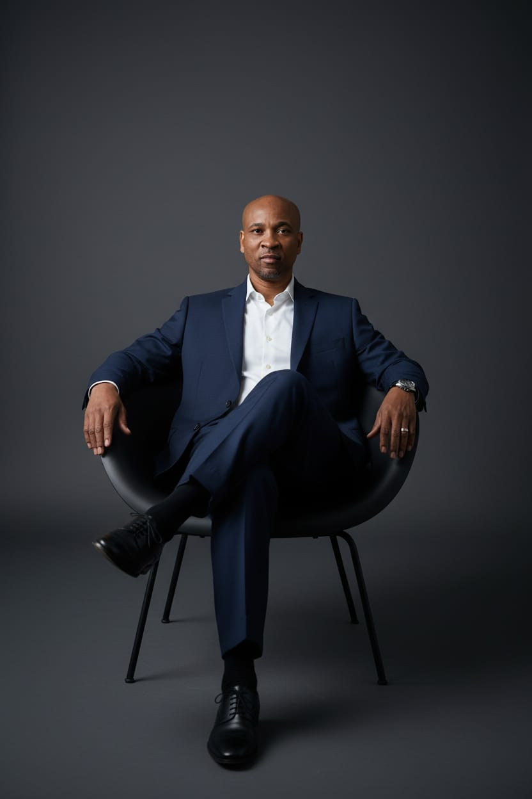

Growing up in a two-parent household, my parents worked very hard to give me the best opportunities possible. Like many parents in our community, they poured everything they had into providing. But here’s the reality: working hard doesn’t always mean having access to the roadmap. My parents weren’t educated on the finer details of helping me connect the dots, understanding how to study effectively, how to advocate for my own learning style, and how to see myself as someone capable of success even when the grades didn’t reflect it.
So I wasn’t the kid who made good grades. Not because I couldn’t. Because I needed information delivered my way, and nobody showed my parents or me how to ask for it. That lesson became my compass. I realized that most people aren’t failing to grow; they’re failing to receive information in a way that sticks for them.
Today, this is exactly how I consult: I don’t assume my teaching style fits you. I learn how you’re drawn to information, then adapt my approach so the message actually lands.
That hunger to learn people, to really see them, is what I brought into 28 years of military service. The structure gave me discipline. The rank of Master Sergeant taught me to focus and lock in on a mission. But my real education came from watching people: observing what works, having conversations that revealed perspectives I never considered, and applying that insight immediately. By the time I retired in 2025, I knew: leadership isn’t about barking orders, it’s about understanding the person receiving them.
Now, when I work with business owners and leaders, I teach this same principle. Before you can lead effectively, you must learn how each person processes direction, what motivates them, and how they need to receive feedback.
The principles I teach aren’t theory; they’re survival lessons I learned the hard way. I was single for several years, then went through a divorce, emerging with clarity I never had before. I learned to relax into the process of making good choices in picking a mate, understanding that choosing someone isn’t about them, it’s about knowing the desires of your own heart, not appealing to your flesh.
When you distinguish joy from happiness, you focus on substance over surface. This is what I now teach my clients: whether you’re single, married, or contemplating divorce, I walk you through discerning lasting connection from fleeting attraction, using the same discernment that led me to someone I could truly grow with.
Working for business owners and the federal government for nearly 15 years, I learned to lean into the people who make you look good. Today, I teach leaders exactly this: how to identify what keeps your best people coming back, and how to build loyalty by understanding what drives each individual.
That commitment to understanding before leading earned me my nickname. On the Divinely Connected Prayer Call, I taught on having a solid foundation for relationship stability. Dr. James Smith declared, “My brother, you broke that down so good. I’m calling you Spiritual Romeo.”
To me, Spiritual Romeo means using the Word of God to lead and direct my life. In my consulting, I bring that same spiritual grounding and practical application, whether you’re navigating marriage, business partnerships, or professional relationships. I help you build foundations that hold when pressure comes.
That same energy, practical, personal, rooted in faith, is why I don’t call myself a coach. Coaches prescribe. I consult, because this is a dialogue, not a lecture. You bring your desires and challenges. I bring a process refined over a decade of helping people understand who they are and what they need. My consulting style is collaborative: I don’t hand you answers. I help you discover that you already hold them, once we clarify your wiring.
What people love most: I put humor in how I talk, and I make it practical. I remove pressure and make growth as easy as possible. I don’t teach one way. I learn how you’re wired, how you process, relate, and decide, then construct our work around your specific design. This is my consulting method: personalized insight beats generic advice every time. No cookie cutter solutions. No perfection required, just putting in the work to be perfected.
That dedication to personalized growth is why I’m drawn to game changing work. When I find something that transforms how people live, lead, or connect, I believe it’s my responsibility to get that information to as many people as possible. This is why I consult across every life stage and setting. The principles are universal; my application is personal.
I’m not here to change anyone. I’m here to help you see the light, to be in a space you genuinely enjoy being in. It’s about becoming perfected through intentional work.
That mission comes with a standard I held for 28 years in uniform: I’m not here to waste your time. Every engagement is an investment. And your return is always bigger than what you put in. This is my commitment to every client who walks through my door: military precision, personal care, and a guarantee that you’ll leave with clarity you didn’t have when you arrived.
Take the assessment and get the clarity you’ve been looking for.
Take the Assessment